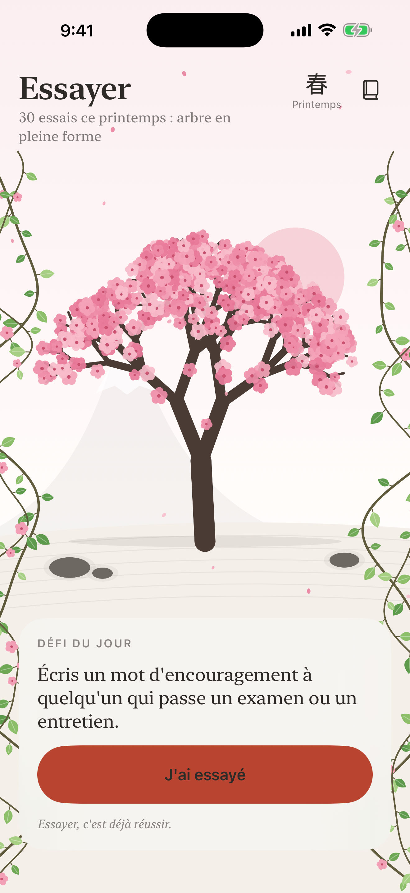
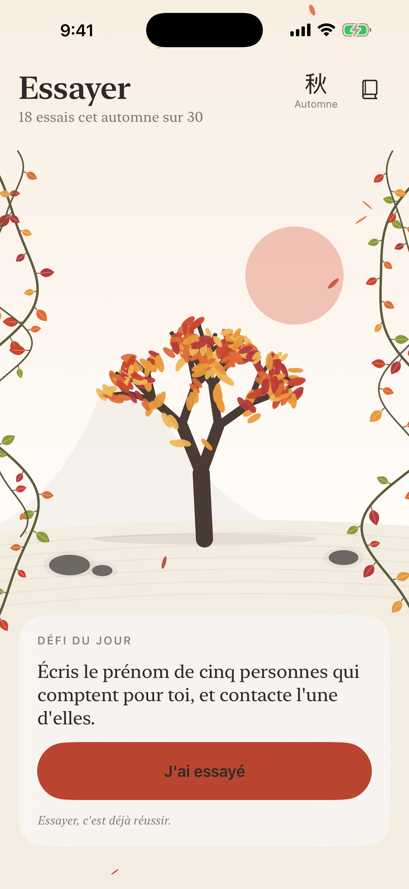
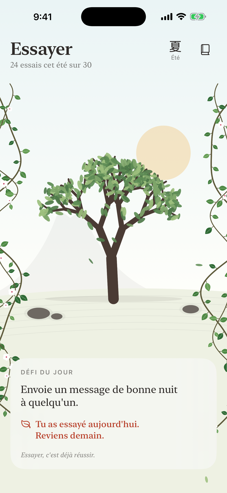
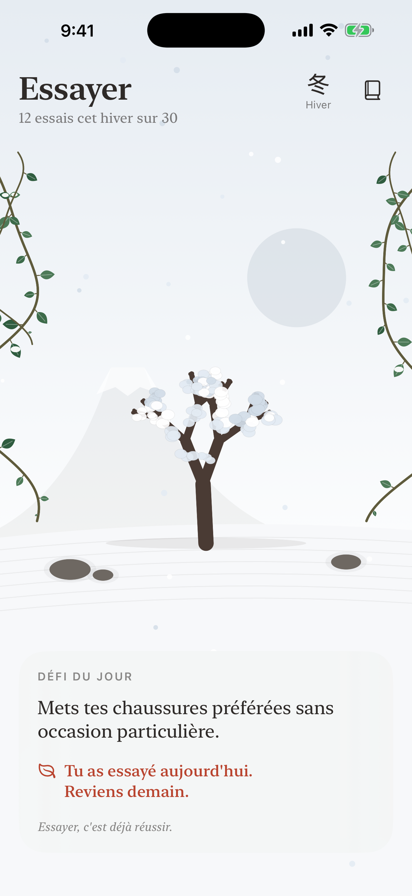
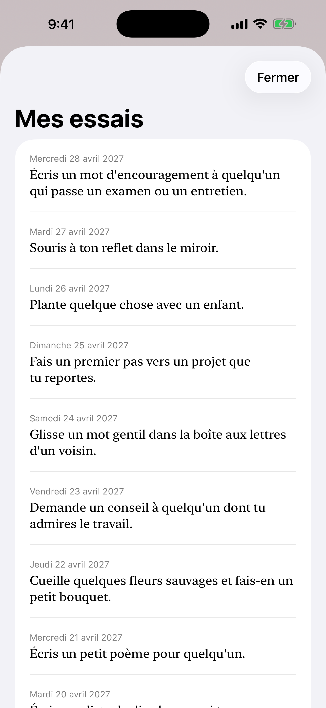

Chaque jour, un petit défi, souvent tourné vers les autres. On ne coche pas « réussi » : on dit « J'ai essayé », et un cerisier grandit.
Essayer, c'est déjà réussir.
Bientôt sur l'App Store




Écrire un mot à quelqu'un, appeler une personne perdue de vue, dire merci… Des centaines de petits défis, et des défis de saison.
Chaque essai fait pousser l'arbre et ses lianes. Il repart de zéro à chaque saison et atteint sa pleine forme en 30 essais.
Fleurs de cerisier au printemps, verdure l'été, érables rouges l'automne, neige l'hiver : le jardin suit le calendrier.
Rien ne se perd si tu rates un jour. Un rappel doux le matin avec le défi du jour, une relance en fin d'après-midi si besoin, et c'est tout.
Tout le monde a le même défi le même jour : découvre combien de personnes ont essayé, et dis-nous quand un défi n'est pas pour toi. Tout est anonyme.
Une question, un problème, une idée de défi ? Écris-nous à cabbry@icloud.com, nous répondons sous 48 h ouvrées.